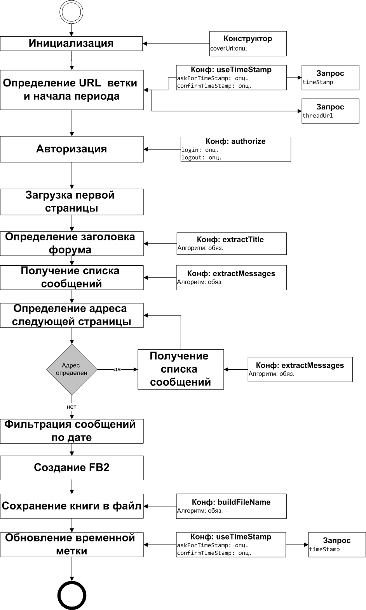

Рассмотрим в качестве примера скрипт обработки форума ForumHouse:
//@ description Forum House
forum('http://www.forumhouse.ru/styles/fh/logo.png'){
useTimeStamp(true,true)
authorize{
login{
url 'http://www.forumhouse.ru/login/login/'
loginField 'login'
login 'testLogin'
passwordField 'password'
password 'testPassword'
}
logout{
url 'http://www.forumhouse.ru/logout/'
confirmLogout{
String confirmUrl = it.findFirst('<a class="button primary LogOut" href="([^"]+?)">Выход</a>')
return confirmUrl? 'http://www.forumhouse.ru/' + confirmUrl: null
}
}
}
conversion{ grayscale true }
extractTitle {String content ->
def res = content.findFirst('<div class="titleBar">\\s*<h1>(.+?)</h1>')
return res? res: "Не удалось определить тему"
}
extractNextPageUrl{String content, int pageNumber->
def res = content.findFirst('<a[^>]+?href="([^>]+?)"[^>]+?>Впер')
return res? "http://www.forumhouse.ru/"+ res.trimAll(): null
}
extractMessages{String content ->
List messages = []
List<String> posts = content.xFind{it.name() == 'li' && it.attribute('id')?.contains('post-')}
for(String post : posts){
//log "post is $post"
ForumMessage message = new ForumMessage()
message.author = post.findFirst('data-author="(.+?)"')
if (!message.author) {
logError('author is empty;post:\n\r' + post)
message.author = 'автор'
}
String dateStr = post.findFirst('([0-9]{0,2}\\.[0-9]{0,2}.[0-9]{0,2})\\s+?в\\s+?[0-9]{0,2}:[0-9]{0,2}')
//log "dateStr is $dateStr"
if(dateStr){
String timeStr = post.findFirst('[0-9]{0,2}\\.[0-9]{0,2}.[0-9]{0,2}\\s+?в\\s+?([0-9]{0,2}:[0-9]{0,2})')
if(!timeStr){
timeStr = '00:00'
logWarning('time is undefined; post:\n\r' + post)
}
dateStr = dateStr.substring(0, dateStr.lastIndexOf('.')) + '.20'+ dateStr.substring(dateStr.lastIndexOf('.') + 1)
dateStr = dateStr + '-'+timeStr
//log "corrected dateStr is $dateStr"
message.date = dateStr.parseDate('dd.MM.yyyy-HH:mm')
} else{
logError ('date is empty;post:\n\r' + post)
}
if(!message.date){
logError ('date is empty;post:\n\r' + post)
message.date = new Date()
}
def res = post.xFind{it.name()=='blockquote'}
String contentStr = res.isEmpty()? null: res.get(0)
//log 'content is '+ contentStr
if(!contentStr) {
logError('message is empty;post:\n\r' + post)
showWarning('message is empty')
contentStr = ' '
}
//log 'content is '+ contentStr
contentStr = contentStr.deleteAll('<noindex>.+?</noindex>').trim()
message.content = contentStr
for(Node node: post.xGetNodes{it.name() == 'img' && it.attribute('src')!= null && !it.attribute('src').contains('attachments') && !it.attribute('src').contains('http')}){
String imageURL = node.attribute('src')
//log "original image URL is '$imageURL'"
if(imageURL?.length() > 0){
//log 'modified image URL is '+ "'http://www.forumhouse.ru/$imageURL'"
message.content = message.content.replace(imageURL, "http://www.forumhouse.ru/$imageURL")
}
}
for(Node node: post.xGetNodes{it.name() == 'a' && it.attribute('href')!= null && it.attribute('href').contains('attachments')&& !it.attribute('href').contains('/upload')}){
message.content = message.content+"<p>${node.toXML()}</p>"
}
message.content = "<div>$message.content</div>"
//log 'modified content is '+ message.content
messages<<message
}
if (messages.isEmpty()) {
logError('messages is empty;content:\n\r' + content)
showWarning('messages are empty')
}
return messages
}
postProcessMessage{ForumMessage message ->
Node node = message.content.xParse()
//log "original message content is $message.content"
if(!node){
return
}
boolean updated = false
for(Node item: node.xGet{it.name() == 'a' && it.attribute('href')?.contains('attachments')}){
//log "all attachments string is $item"
String attachementsURL = item.attribute('href')
//log "real attachments URL is 'http://www.forumhouse.ru/$attachementsURL'"
String defaultURL = item.xFind{it.name() == 'img'}?.attribute('src')
if(!attachementsURL || attachementsURL.endsWith('attachments/')){
attachementsURL = defaultURL
}
if(attachementsURL){
String fileName = loadAttachment("http://www.forumhouse.ru/$attachementsURL")
if(fileName){
attachementsURL = fileName
item.replaceNode{a{img('src': attachementsURL)}}
//log "attachment was saved to $fileName"
} else if(defaultURL){
logWarning "attachment was not saved, using default url"
item.replaceNode{a{img('src': "http://www.forumhouse.ru/$defaultURL".toString())}}
} else{
logWarning "attachment can not be loaded"
item.parent().remove(node)
}
updated = true
}
}
if(updated){
message.content = node.toXML()
//log "updated message content is $message.content"
}
}
}
//@ description Forum Houseзадает название скрипта в списке доступных скриптов.
forum('http://www.forumhouse.ru/styles/fh/logo.png')
открывает блок конфигурации форума, при этом задается url обложки для
генерируемой книги.
useTimeStamp(true,true)задает настройку, согласно которой перед созданием книги у пользователя запрашивается подтверждение даты начала периода, а после создания запрашивается подтверждение на обновление временной метки.
Блок authorize{...} описывает параметры авторизации на сайт форума. В подблоке login указывается, что страница логина находится по адресу http://www.forumhouse.ru/login/login/ , что текстовое поле логина имеет идентификатор login (об этом я узнал, открыв страничку в Firefox и воспользовавшись утилитой FireBug), текстовое поле пароля имеет идентификатор password , и что в эти поля нужно вводить значения 'testLogin' и 'testPassword', соответственно (естественно, эти значения нужно заменить на данные Вашей учетной записи).
В подблоке logout указывается, что выход с сайта осуществляется через страницу http://www.forumhouse.ru/logout/ . После перехода на эту страничку отображается окно подтверждения выхода. Это окно - тоже html-страничка, на которой нужно найти кнопку с названием Выход, определить адрес, на который эта кнопка перенаправляет, и перейти по этому адресу.
В блоке conversion{...} указывается, что загруженные картинки должны быть преобразованы в черно-белые изображения.
В блоке extractTitle {...} описан алгоритм определения названия ветки форума на основе контента первой страницы форума. Для определения названия используется регулярное выражение.
В блоке extractNextPageUrl{...} описан алгоритм определения адреса следующей странички форума на основе контента текущей страницы.
Самый сложный блок - это extractMessages{...}, который описывает алгоритм создания списка сообщений на основе контента страницы. В этом блоке активно пользуется фильтрация на основе xPath-выражений. Значения этих выражений я также нашел помощью FireBug.
for(Node node: post.xGetNodes{it.name() == 'img'
&& it.attribute('src')!= null
&& !it.attribute('src').contains('attachments')
&& !it.attribute('src').contains('http')}){
String imageURL = node.attribute('src')
//log "original image URL is '$imageURL'"
if(imageURL?.length() > 0){
//log 'modified image URL is '+ "'http://www.forumhouse.ru/$imageURL'"
message.content = message.content.replace(imageURL, "http://www.forumhouse.ru/$imageURL")
}
}
к контенту сообщения добавляются ссылки на "обычные" изображения, в которых относительный путь заменяется на абсолютный.
for(Node node: post.xGetNodes{it.name() == 'a'
&& it.attribute('href')!= null
&& it.attribute('href').contains('attachments')
&& !it.attribute('href').contains('/upload')}){
message.content = message.content+"<p>${node.toXML()}</p>"
}
к контенту сообщения добавляются ссылки на вложения. Позже эти блоки будут обработаны по отдельному алгоритму.
message.content = "<div>$message.content</div>"контент сообщения оборачивается в тег div, чтобы в дальнейшем можно было использовать xPath выражения.
В блоке postProcessMessage{...} дополнительно обрабатываются изображения, прикрепленные к посту в качестве вложений. Здесь производится загрузка вложения на локальный диск, а в контенте сообщения ссылка на изображение подменяется локальной ссылкой. Так как загрузка вложения разрешена лишь для авторизованных пользователей, то становится понятным, зачем мы авторизовались в начале скрипта. Может возникнуть вопрос, почему мы загружаем изображения здесь, а не в блоке extractMessages. Дело в том, что в FB2-книжку могут попасть не все посты, а лишь посты, начиная с определенной даты. В этом случае загрузку вложений нужно провести не для всех постов, а только для тех, которые попадут в postProcessMessage{...}.
Теперь у Вас должно обще представление о работе с форумами. Для справок пользуйте информацию из Приложений